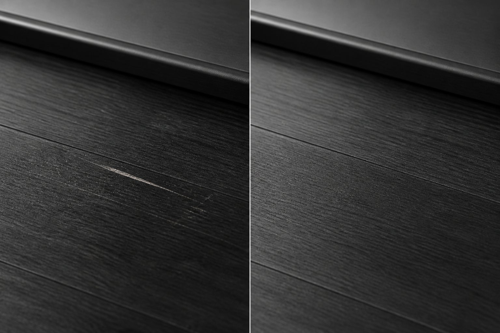

木部補修
枠・建具・造作物などの傷やへこみを、周囲になじむ仕上がりへ近づけます。
傷を、なかったことに近づける。
相模原発の住宅内装リペア。木部・金属・フローリング・建具・特殊素材まで、 直せるか分からないものもまずはInstagram DMから相談できます。
01
小さく見える傷ほど、素材や場所によって判断が変わります。写真だけでも状態を見ながら、 できることを一緒に整理します。
02
木部も、金属も、特殊素材も。全面施工ではなく、住まいの部分的な傷や劣化に向き合うリペアです。
枠・建具・造作物などの傷やへこみを、周囲になじむ仕上がりへ近づけます。
金属サッシや金物まわりの小傷、擦れ、状態に応じた補修相談に対応します。
生活の中で目に入りやすい床の傷を、素材と色に合わせて整えます。
ドア枠、窓枠、巾木など、住まいの印象に関わる細部を丁寧に見ます。
全面施工ではなく、小さな傷や部分補修の相談範囲として状態を確認します。
人造大理石、樹脂、コーキングなど、判断に迷う素材もまずは写真で相談できます。
03
現在は仮画像です。実際の施工写真が揃い次第、同じカード構造のまま差し替えます。

PLACEHOLDER
生活傷の見え方を確認し、色味や艶感を合わせながら整える想定のカードです。
PLACEHOLDER
素材の見極めが必要な傷も、まずは写真から可否を確認する想定です。
04
23歳で独立。若さを軽さではなく、柔軟さと丁寧な向き合い方として届けることを大切にしています。
早くから現場に立ち、自分の手で信頼を積み重ねる道を選んだリペア職人です。
住宅内装のさまざまな素材や状態を見ながら、現場ごとの判断力を磨いてきました。
直せるか分からないものも、写真を見ながらできる範囲と次の動きを整理します。
目立たなくするだけでなく、周囲の質感や光の見え方まで意識して仕上げます。
05
代表者名：田中佑弥
06
相模原を中心に、神奈川・東京・周辺県まで対応します。交通費は別途ご相談ください。
写真だけでも相談可能です。直せるか分からないものも、素材・場所・状態が分かる写真を添えて送ってください。
Instagram DMで相談するInstagram URLは未確定のため、現在は仮リンクです。